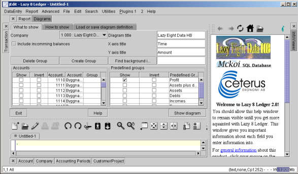
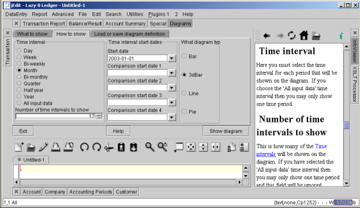
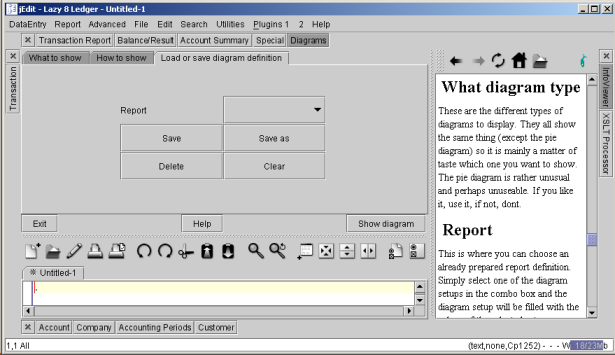
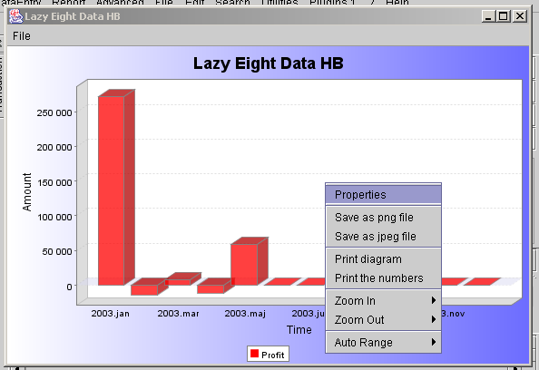

The Lazy8 Ledger Tutorial

Lesson: Diagrams
This section describes how to create bar charts, pie charts, and line charts for analysis
of your transactions. With this powerful tool, you can quickly see how well your company is
performing. You can show a graph of the activity in any accounts over virtually any period of time.
It is possible to group together accounts under one name and one sum and there are some common groups predefined
like, profit, assets, debts, incomes and expenses.
There is one more dimension to the analysis.
You can compare up to 5 different time periods side by side. An example of comparing 2 time periods
would be like comparing each month of last year with each month of this year, all in one graph.

The fields necessary to define a graph are described below.
Company
Choose here which company you want to work with. Most users will
have only one company to work with and in such a case then there should
be no selection necessary and the company will come here automatically.
Include incomming balances
This is one of the most critical parameters for the creation of your diagram. If this is
checked, all assets and debts will be shown in the diagrams as an accumulated total. This
accumulated total will include all transactions up to that particular time interval. If this
is not checked, then all assets and debts will be shown as changes in the current
balance during the given time interval.
Delete and create group buttons
You have the possibility to create and delete groups of accounts that you decide have something
in common with each other such that they should be shown in the diagrams as one sum total. When
you hit the create button you will be shown a list of all accounts not already in a group. Simply
select the accounts you want to group together and give this new group a name. When you hit the
delete button, you will be shown a list of all the presently created groups and you can
choose which group you want to delete.
Diagram title
The text you enter here will be shown at the top of the graph in a large font.
X axis title
The text you enter here will be shown at the bottom of the graph to show what the units are
for the x axis. You can enter anything you want because it is rather obvious what the units
are on the graph and so no further explanation is necessary.
Y axis title
The text you enter here will be shown sidways on the left side of the graph to show what the units are
for the y axis. You may want to put what currency you are using here, example 'US dollars' or
'Euro'.
Background image
You may have a background image added to the diagram. The image may be in PNG, JPEG, or GIF
format. There is a button 'Find background image' to help you browse your directories to
find the image. You may also enter a URL here like 'http://www.lazy8.nu/lazy83d.jpg' and if
you are then connected to internet, you will get a nice lazy8 logo on the background of your
diagram.
Accounts
Here is a list of all the accounts for your company. You may choose which accounts you want to
show in the diagram by checking the 'Show' column. Some balances in certain accounts are always
negative and sometimes it is the absolute value of the balance that you want to show on a
diagram. To fix this problem, you may choose the check the 'Invert' column beside that account.
Checking the 'Invert' column will not show the absolute value of the balance of the account
but the negative of the balance of the account. Thus if the balance of the account is negative, it
will show as positive on the diagram and if the balance of the account is positive it will show as
negative on the diagrams. This is mainly used for accounts that are debts or incomes.
If you have
created a group of accounts, then the group column will be filled with the name
of the group and you wont be able to uncheck the 'show' column. To remove the check in the
'show' column you must delete the group.
Predefined groups
Here are a few very useful predefined groups that you may want to display in the diagrams.
They are described as the following:
Profit
Selecting this group will show on a diagram the profit for each time interval. The
Include incomming balances option will not
have any effect on this group.
Assets plus debts
Selecting this group will show on a diagram the sum of the all the accounts marked as
assets and debts for each time interval. If the
Include incomming balances option is checked
then this group could be better known as 'total capital in the company' as that is what will
be shown in graphs at each time interval. If 'Include incomming balances' is not checked, then
this group will show the exact same value as the predefined 'Profit' group.
Assets, debts, incomes, and expenses
These groups will simply show the sum of all the respective accounts marked as Assets, debts,
incomes, and expenses

Time interval
Here you must select the time interval for each period that will be shown on the diagram. If
you choose the 'All input data' time interval then you may only show one time period.
Number of time intervals to show
This is how many of the
Time intervals will be shown on the diagram. If you have selected the 'All input data'
time interval then you may only show one time period and this field will be ignored.
Time interval start dates
Here you need to give the start date for the first time interval in the graph. Usually you
will only need to give the first 'Start date.' In the case that you want to be comparing
two different time periods side by side, for instance, compare last year with this year, then you need to
also give the 'comparison start date 1' as well. If you want to compare several more time
periods, then you may enter start dates for up to 5 time period comparisons.
What diagram type
These are the different types of diagrams to display. They all show the same thing (except
the pie diagram) so it is mainly a matter of taste which one you want to show. The pie
diagram is rather unusual and perhaps unuseable. If you like it, use it, if not, dont.

Report
This is where you can choose an already prepared report definition. Simply select
one of the diagram setups in the combo box and the diagram setup will be filled with the
values of the selected setup.
Save button
After you have entered your diagram setups. You can press this
button to save it and the name will be the same as what is showing in the
REPORT field named above. You may want to use the Save as button
described below instead.
Save as button
When you have written a new diagram setups, then you can press here
and then you will be asked to give a name for the diagram setups which will later
show up in the REPORT field described above.
Delete button
Be very careful here, this will delete the diagram setup showing in the REPORT
field described above.
Clear button
This will clear the diagram setups by filling it with a very simple default diagram.

Show diagram button
Hitting this button will create the diagram you have defined as shown above. The diagram will
have its own menus for saving and printing as well as the possibility to change some of the
properties of the diagram.
You can right-click anwhere on the diagram window to get a pop-up menu for zooming.
It is important that you stretch the diagram window to the size and shape that you want
before saving it to a file because the exact size and shape of the window is what is saved
to the file. For printing however, the size of the window makes no difference because the
diagram will be printed to the full size of one sheet of paper.
Help button
Show the help screen associated with this form.
Exit button
Hitting this button closes this diagram creation window..
Copyright
2002 Lazy Eight Data HB